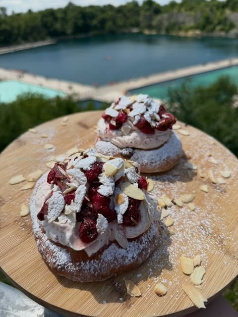
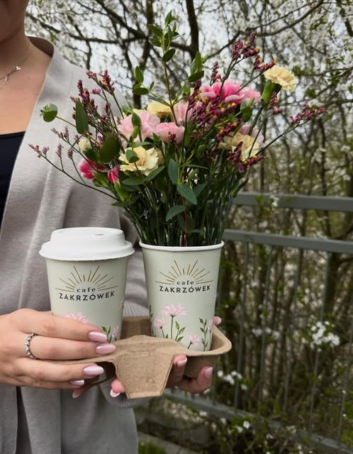
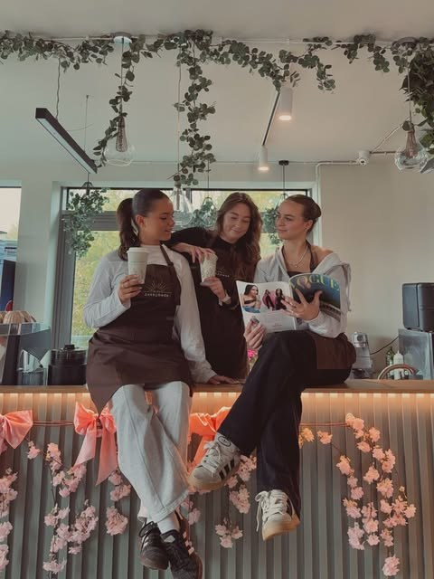
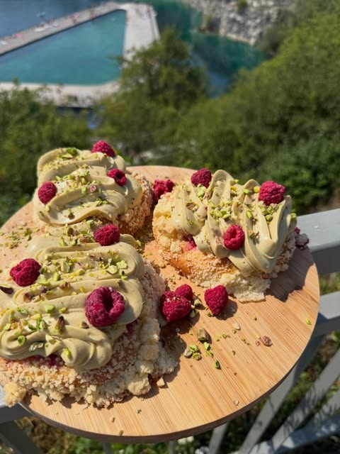
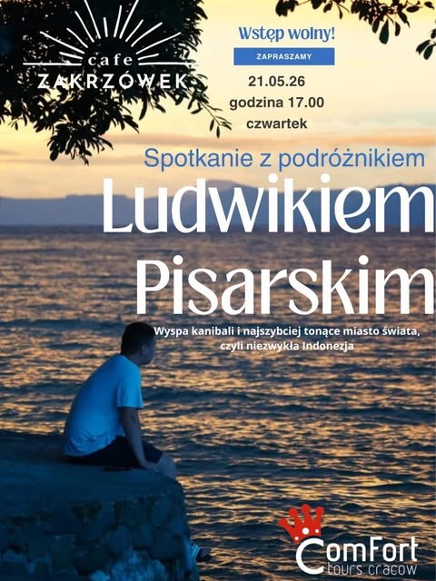

Sprawdzam godziny…
Sezon na lato
Lato nad zalewem kawiarnia z widokiem
Drożdżówka, słońce i widok, który zatrzymuje lato na dłużej.
ul. Wyłom 22, Kraków · tuż nad Zakrzówkiem

Jesteś na spacerze?
Zrób przystanek na kawę z widokiem.
Jesteśmy przy ul. Wyłom 22, tuż przy ścieżkach wokół zalewu. Wpadnij na chwilę – albo na dłużej.
-
01
Zejdź na chwilę ze ścieżki
Kawiarnia jest tuż nad Zakrzówkiem – bez nadkładania drogi.
-
02
Weź kawę na wynos
W naszym kubku z logo, do tego drożdżówka albo croissant z witryny.
-
03
…albo zostań na widoku
Usiądź przy stoliku i popatrz na turkusową wodę i zieleń wokół zalewu.
Sprawdzimy, jak daleko jesteś (lokalizacja nie jest nigdzie zapisywana).

Oferta sezonowa
Teraz u nas
Widok, który zatrzymuje
Z naszego Instagrama


Nie tylko na chwilę
Przestrzeń do rozrywki i odpoczynku
- Gry planszowe i szachy na miejscu
- Gazety i magazyny do kawy
- Duże okna i widok na zieleń wokół zalewu
- Stoliki w środku i na zewnątrz
- Klimatyczne miejsce na sesję zdjęciową
Przyjęcia i wydarzenia
Zaplanuj swoje wydarzenie u nas
Duża, klimatyczna sala z pięknym widokiem. Organizujemy:
- urodziny i imieniny
- spotkania biznesowe
- konferencje i warsztaty
- baby shower
- ceremonie zaślubin
- imprezy firmowe
Organizujemy też spotkania z gośćmi – np. wieczory podróżnicze. Śledź nasz Instagram, żeby nie przegapić kolejnego.

Dojazd i godziny
Wpadnij do nas
- Adres
- ul. Wyłom 22
30-364 Kraków (Dębniki) - Otwarte
- codziennie 9:00–19:00
- Telefon
- 795 455 233
- cafe.zakrzowek@gmail.com